Student Guide: Installing Claude Code and Connecting GitHub
This guide contains instructions on how to install Claude Code on Windows, Apple, Linux, and Chromebook systems, and - once that is done - how to connect Claude to your GitHub account so that Claude can create and publish projects. If all goes smoothly, this process can take about 20 minutes: you will install Claude Code with one command for your system, sign in, then install Git and the GitHub CLI and run gh auth login.
Before you start
Everyone needs a paid Claude account, which you can purchase at claude.ai. I recommend purchasing the Pro account, which costs $20 a month. The free claude.ai plan does not include Claude Code. I also have three free 1-week passes that I can share. If you are unwilling / unable to purchase a one-month Claude subscription, please email me (hhavens1@utk.edu), and I will share my referral link with you. You will have to cancel within 1 week if you do not want to be charged the monthly rate. If you are unable to install Claude on your computer, you can also use UT's AI Hub for this section of the class, but you will have to do much more work to achieve similar results because it will not be able to build projects in GitHub.
For this process, you will also need a free GitHub account (github.com/signup), about 4 GB of RAM, and a supported system: macOS 13+, Windows 10 (1809) or later, or Ubuntu 20.04+ / Debian 10+.
Everything below happens in a terminal. How to open one:
| System | How to open a terminal |
|---|---|
| macOS | Press Cmd+Space, type Terminal, press Return |
| Windows | Press the Start key, type PowerShell, open Windows PowerShell (not as Administrator) |
| Linux | Press Ctrl+Alt+T, or find Terminal in the app menu |
| Chromebook | Settings > Advanced > Developers > turn on Linux development environment, then open the Terminal app |
Tip for students: copy each command exactly, paste it into the terminal, and press Enter. Close and reopen the terminal after installing anything.
Install on macOS
In Terminal, run the recommended installer:
curl -fsSL https://claude.ai/install.sh | bashStudents who already use Homebrew can run this instead:
brew install --cask claude-codeThe installer version updates itself; the Homebrew version needs brew upgrade claude-code from time to time.
If Terminal can't find claude
If you type claude and Terminal answers zsh: command not found: claude, Claude is usually installed, but your Mac doesn't know where to look for it. The installer puts Claude in a hidden folder, ~/.local/bin, and many Macs don't search that folder. These steps tell your Mac where to look. You only need to do them once.
Quit Terminal (Command + Q) and reopen it. Type
claude --version. If it prints a version number, you're done: the old window just hadn't caught up.Check that Claude is really installed. Type:
ls ~/.local/bin/claudeIf it prints something like
/Users/yourname/.local/bin/claude, Claude is installed: go to step 3. If it printsNo such file or directory, the install didn't finish. Run the install command at the top of this section again, let it finish, and read what it prints.Check which shell your Terminal uses. Type:
echo $0Most Macs print
-zsh. If yours prints-bash, use the bash version in step 4.Add Claude's folder to the places your Mac searches. Copy both lines, paste them into Terminal, and press Return:
echo 'export PATH="$HOME/.local/bin:$PATH"' >> ~/.zshrc source ~/.zshrcNothing appears when it works. Copy the lines exactly: the single quotes matter, and the two arrows
>>add a line to the file (one arrow would erase it). If step 3 printed-bash, use this version instead:echo 'export PATH="$HOME/.local/bin:$PATH"' >> ~/.bash_profile source ~/.bash_profileQuit Terminal (Command + Q), reopen it, and type
claude --version. It should print something like2.1.319 (Claude Code).
If it still doesn't work:
- Check that the line was saved. Type
grep '.local/bin' ~/.zshrc. It should print theexport PATHline. If it prints nothing, repeat step 4. zsh: permission denied: /Users/yourname/.zshrcin step 4: typechmod u+w ~/.zshrc, then repeat step 4. If that also says permission denied, stop and ask the instructor.- Anything else: send the instructor a screenshot of your Terminal window.
Install Homebrew on a Mac
Homebrew is a free tool that installs command-line programs on a Mac. You will need it later in this guide to install the GitHub CLI (brew install gh). To see whether you already have it, type brew --version in Terminal. If it prints a version number, skip to the next section.
Before you start, check two things:
- Your macOS version. Click the Apple menu, then About This Mac. Homebrew officially supports macOS Sequoia (15) and newer. Versions 11 to 14 may work but are unsupported. If your Mac is older than that, skip Homebrew and use the
ghinstaller from cli.github.com in the Git section below. - Your account. You must be signed in to a Mac account with administrator rights, and you need its password.
Open Terminal: press Command + Space, type
Terminal, and press Return.Copy this whole line, paste it into Terminal, and press Return:
/bin/bash -c "$(curl -fsSL https://raw.githubusercontent.com/Homebrew/install/HEAD/install.sh)"When Terminal shows
Password:, type your Mac login password and press Return. Nothing appears while you type, not even dots. That is normal.The script lists what it is about to install and says
Press RETURN/ENTER to continue. Press Return.If your Mac lacks Apple's Command Line Tools, the script downloads them. This can take 5 to 15 minutes. Leave Terminal open. If a pop-up asks to install the tools, click Install and accept the license.
When it finishes, Terminal prints
Installation successful!followed by a Next steps section. On a Mac with Apple silicon (M1 or later), you must run the commands listed under Next steps, or Terminal will not findbrew. Copy them from your own Terminal window. They usually look like this:echo >> ~/.zprofile echo 'eval "$(/opt/homebrew/bin/brew shellenv)"' >> ~/.zprofile eval "$(/opt/homebrew/bin/brew shellenv)"Older Intel Macs install Homebrew in
/usr/local, which Terminal already searches, so they usually show no Next steps.Quit Terminal (Command + Q), reopen it, and type
brew --version. It should print something likeHomebrew 4.6.0.
If step 7 says zsh: command not found: brew, you skipped step 6: run those lines, then reopen Terminal. To check the whole setup, run brew doctor. The reply Your system is ready to brew. means all is well.
Install on Windows
Install Git for Windows first, accepting the default options. It is optional for Claude Code, but students need Git for the GitHub steps anyway, and it gives Claude Code a Bash shell to work in.
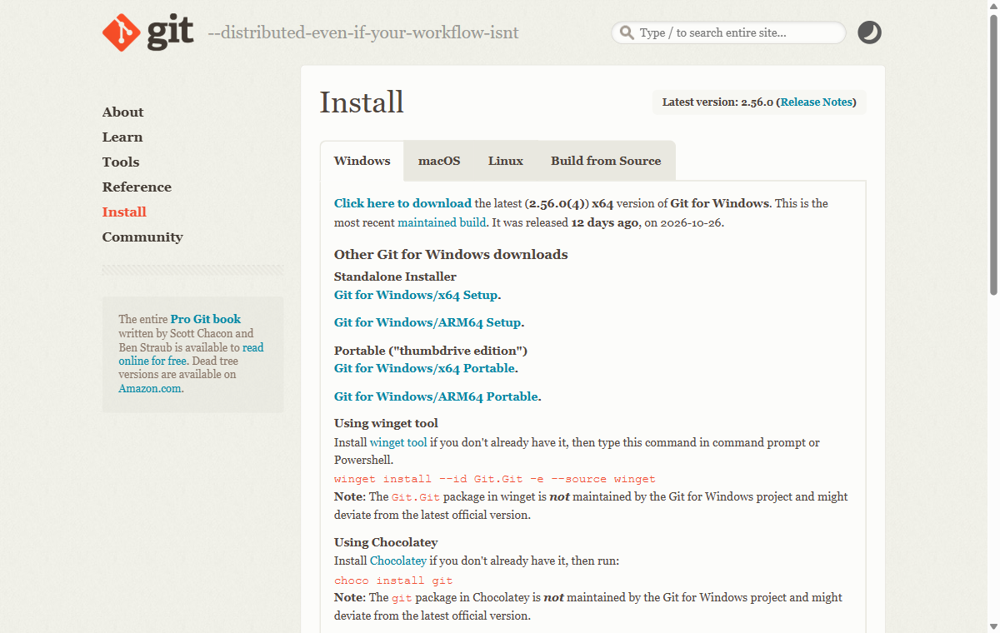
Then, in PowerShell (no Administrator rights needed):
irm https://claude.ai/install.ps1 | iexIf a student is in the older Command Prompt (CMD) instead:
curl -fsSL https://claude.ai/install.cmd -o install.cmd && install.cmd && del install.cmdAlternative for students who use WinGet:
winget install Anthropic.ClaudeCodeThe two most common mix-ups have telltale errors:
'irm' is not recognizedmeans they are in CMD: use the CMD command, or open PowerShell.The token '&&' is not a valid statement separatormeans they are in PowerShell: use the PowerShell command.
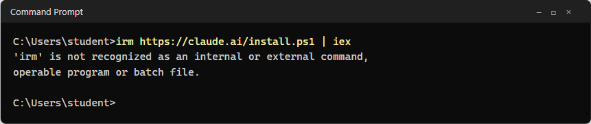
Students who already use WSL (Windows Subsystem for Linux) should open their WSL terminal and follow the Linux steps there instead.
Install on Linux and Chromebook
On Linux, WSL, or a Chromebook's Linux terminal, run:
curl -fsSL https://claude.ai/install.sh | bashIf the terminal says curl: command not found (common on fresh Chromebook Linux), install it first with sudo apt update && sudo apt install -y curl, then rerun the command above.
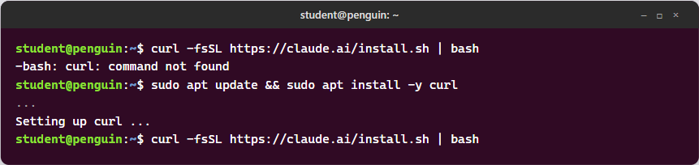
Chromebooks need the Linux development environment turned on (see Before you start). School-managed Chromebooks may block it; those students can use Claude Code on the web or the UT AI Hub instead.
First launch and sign-in
Close the terminal, open a new one, and check the install:
claude --versionIt should print a version number such as 2.1.211 (Claude Code). Then start Claude Code:
claudeA browser window opens. Students sign in with their Claude account and approve access, then return to the terminal. Type /exit (or press Ctrl+C twice) to quit.
If anything looks wrong, claude doctor prints a health check with suggested fixes.
Sandbox your work with Claude
In order to "sandbox" your work with Claude, or isolate it so that it doesn't interfere with the rest of your files, you should always start Claude Code from one course folder, and adjust a settings file to stop Claude from reading or changing files outside it. On Mac, Linux, and WSL2, the sandbox also enforces this at the operating-system level for every command Claude runs.
There are two layers, and they cover different things:
| Layer | What it restricts | macOS | Linux / Chromebook / WSL2 | Windows (PowerShell) |
|---|---|---|---|---|
| Folder lock (settings file) | Claude's own read, edit, and write tools | Yes | Yes | Yes |
| Sandbox | Every terminal command Claude runs: file writes and internet access | Yes, built in | Yes, after one install | No: use WSL2 for this layer |
Make a course folder and always start Claude from inside it. Claude's working folder is wherever the terminal is when
claudeis typed, so never start it from the home folder.macOS, Linux, Chromebook, WSL:
mkdir -p ~/claude-class cd ~/claude-classWindows PowerShell:
mkdir $HOME\claude-class cd $HOME\claude-classLinux, Chromebook, and WSL2 only: install the two sandbox helpers. Mac needs nothing.
sudo apt-get install -y bubblewrap socatOpen the user settings file in a text editor. It applies every time the student runs Claude.
macOS, Linux, Chromebook, WSL:
mkdir -p ~/.claude nano ~/.claude/settings.jsonWindows PowerShell:
mkdir -Force $HOME\.claude notepad $HOME\.claude\settings.jsonPaste this in exactly, save, and close the editor (in nano: Ctrl+O, Enter, Ctrl+X). If the file already has text in it, stop and ask the instructor rather than overwrite it.
{ "sandbox": { "enabled": true, "filesystem": { "denyRead": ["~/.ssh", "~/.aws"] }, "network": { "allowedDomains": ["github.com", "api.github.com"] } }, "permissions": { "disableBypassPermissionsMode": "disable", "blockReadsOutsideWorkingDirectories": true, "blockWritesOutsideWorkingDirectories": true, "deny": ["Read(~/.ssh/**)", "Read(~/.aws/**)"] } }Start Claude from the course folder and confirm it worked. Type
/sandboxto see that the sandbox is on (Mac, Linux, WSL2), and/statusto see that the settings file loaded.Try to break it. Ask Claude: "List the files in my Documents folder." It should refuse, because Documents is outside the course folder.
What each setting does:
| Setting | Effect |
|---|---|
sandbox.enabled | Runs Claude's terminal commands inside the operating system's sandbox: they can write only in the course folder and a temp folder |
sandbox.filesystem.denyRead | Sandboxed commands cannot read the student's SSH keys or cloud credentials |
sandbox.network.allowedDomains | Sandboxed commands reach only GitHub; any other site needs the student's approval |
blockReadsOutsideWorkingDirectories | Claude's file tools refuse to read anything outside the folder it was started in |
blockWritesOutsideWorkingDirectories | Claude's file tools refuse to create or edit anything outside that folder |
disableBypassPermissionsMode | Turns off the mode that skips permission prompts, so Claude always asks first |
permissions.deny | A second lock on the SSH and cloud-credential folders |
Things to know before class:
- Windows without WSL2: the folder lock works, but terminal commands are not sandboxed. Students should read each command before approving it. For full protection, run Claude inside WSL2 and follow the Linux steps.
- A blocked command: if a command fails inside the sandbox, Claude may ask to rerun it outside. That needs the student's approval, and "No" is the safe answer when unsure.
- Version: the write lock needs Claude Code 2.1.314 or later. Check with
claude --version; runclaude updateif it is older. - Lab computers: an administrator can put the same settings in a managed file that students cannot change:
/Library/Application Support/ClaudeCode/managed-settings.json(Mac),/etc/claude-code/managed-settings.json(Linux), orC:\Program Files\ClaudeCode\managed-settings.json(Windows).
Install Git and the GitHub CLI
Claude Code talks to GitHub through two tools: git (version control) and gh (the GitHub command-line tool, which handles sign-in, repos, and pull requests).
| System | Install command |
|---|---|
| macOS | xcode-select --install (gives Git), then, once Homebrew is installed (see the Mac section above), brew install gh |
| Windows | Git for Windows (installed above), then winget install --id GitHub.cli |
| Linux / Chromebook / WSL | sudo apt install -y git, then follow GitHub's Linux install steps for gh |
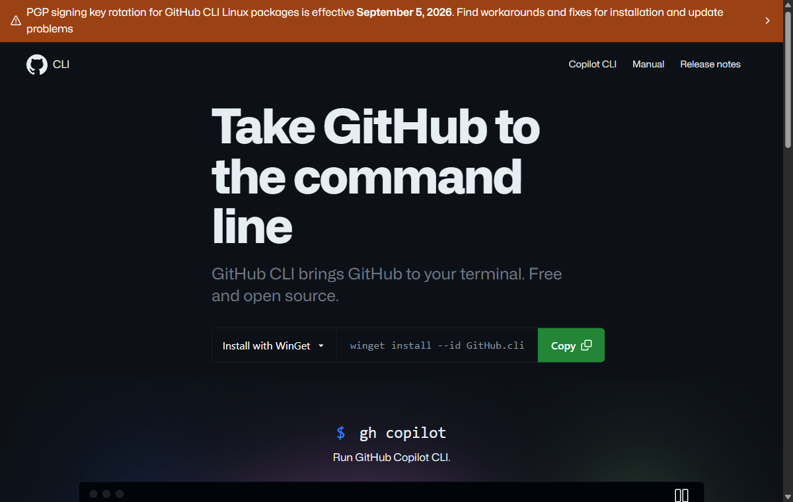
Mac students without Homebrew can download the gh installer from cli.github.com instead. Reopen the terminal, then confirm both work with git --version and gh --version.
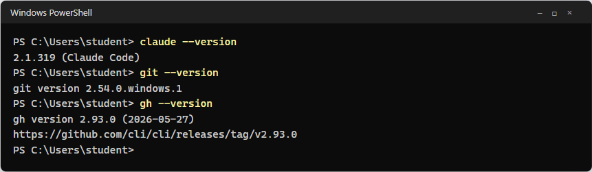
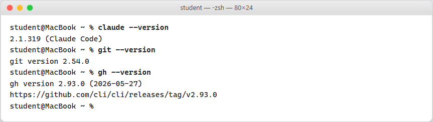
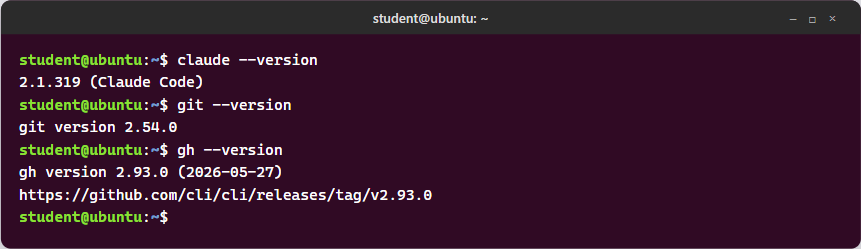
Connect to GitHub
This is the same on every system. It takes three commands.
Sign in to GitHub from the terminal:
gh auth loginChoose GitHub.com, then HTTPS, answer Yes to "Authenticate Git with your GitHub credentials," and pick Login with a web browser. Copy the one-time code shown, press Enter, and paste it into the browser page.
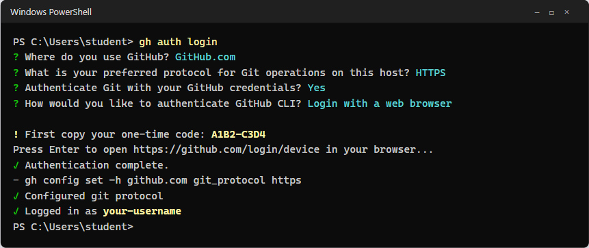
Windows: a completed gh auth login. Use the arrow keys and Enter to pick each answer. Each student's one-time code will differ.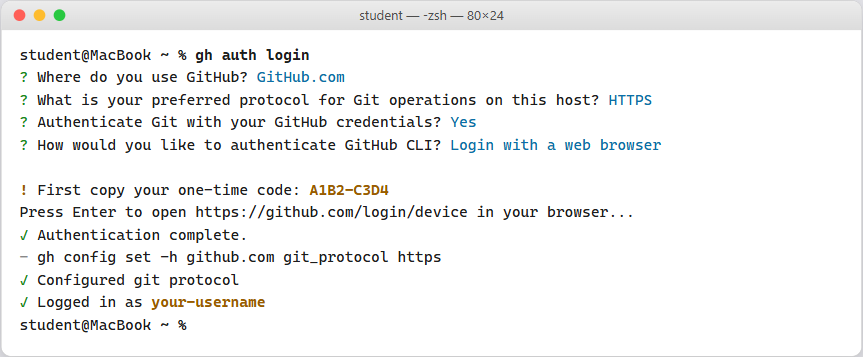
macOS: the questions and answers are identical. 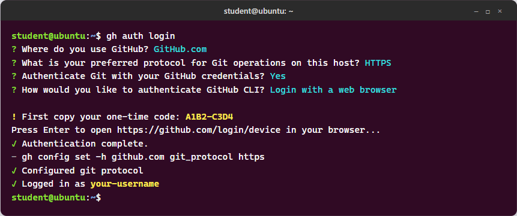
Linux, WSL, or Chromebook: identical again. If no browser opens on its own, open github.com/login/device yourself and enter the code. Tell Git who you are (use the email on your GitHub account):
git config --global user.name "Your Name" git config --global user.email "you@example.com"Check the connection:
gh auth statusIt should say "Logged in to github.com account (your username)."
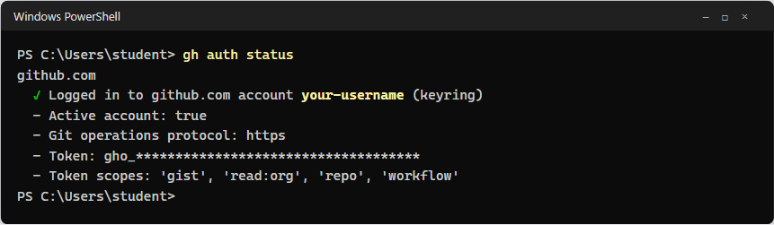
Windows: a successful check. The green check mark and your own username are what matter. 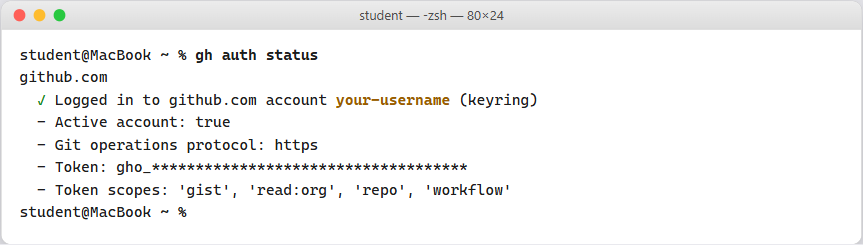
macOS: a successful check. 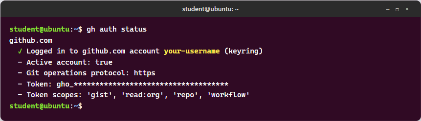
Linux, WSL, or Chromebook: a successful check. On some Linux systems the word in parentheses is a file path instead of keyring; that is fine.
That is all Claude Code needs. When a student asks Claude to commit, push, or open a pull request, it uses these same git and gh tools and the login they just made. Claude asks permission before running each command, so students stay in control.
Practice exercise: vibe code and publish a website
If you finish the installation before the end of class, I recommend trying the following short exercise to confirm every piece works together.
In this exercise you will "vibe code": you describe what you want in plain English, and Claude writes the code. You will build a one-page website about a book you love, save it to GitHub, and publish it on the web with GitHub Pages. Everything happens in your terminal (PowerShell on Windows, Terminal on Mac, the Linux terminal on Linux or a Chromebook). Allow about 30 minutes.
Your website will be public, so anyone with the link can see it. Do not put your address, phone number, student ID, or anything else private on it.
Open your terminal, go to your course folder, make a folder for the website, and start Claude there.
Windows PowerShell:
cd $HOME\claude-class mkdir my-first-site cd my-first-site claudeMac, Linux, or Chromebook:
cd ~/claude-class mkdir my-first-site cd my-first-site claudeAsk Claude to build the page. Type this request, filling in your own book, and press Enter:
Build a one-page website about a book I love: [title] by [author]. Put everything in a single file called index.html, with the styling included. Give it a title, a short summary, three reasons I recommend the book, and a favorite quotation. Make it look good on a phone.
Claude will show you the file it wants to create and ask permission. Approve it.
Look at your page. Open the my-first-site folder in File Explorer (Windows), Finder (Mac), or the Files app under Linux files (Chromebook), and double-click index.html. It opens in your browser.
Vibe code: improve the page by asking for changes, one at a time. After each change, refresh the browser to see it. For example:
Change the color scheme to dark green and cream.
Add a short section about the author.
The quotation is too small. Make it stand out.
Check the quotation and any facts against the book itself. Claude can get quotations wrong, and you are responsible for what you publish.
Save the project to GitHub. When you like the page, type:
Commit this to a new git repository. Then create a public GitHub repository called my-first-site and push it.
Approve each command. Claude should finish by giving you a link to your repository on github.com.
Publish the website. Type:
Turn on GitHub Pages for this repository from the main branch, and tell me the website address.
Your address will look like
https://your-username.github.io/my-first-site/. The first time, it can take a minute or two to appear; if you see a 404 page, wait and refresh.Make one more change and publish it. Ask for any change you like, then type:
Commit and push this change.
Wait a minute, refresh your website, and you should see the update. This is the whole cycle: change, commit, push, publish.
Type
/exitto leave Claude when you are done.
You do not need to type any of the commands below; Claude proposes them. Knowing what they mean helps you decide whether to approve them:
| You will see | What it does |
|---|---|
git init | Starts tracking changes in this folder |
git add and git commit -m "..." | Saves a snapshot of your files, with a short note |
gh repo create my-first-site --public --source=. --push | Creates the repository on GitHub and uploads your files |
gh api repos/.../pages ... | Turns on GitHub Pages for the repository |
git push | Uploads your latest snapshot to GitHub |
If something goes wrong:
- "Please tell me who you are" when committing: you skipped step 2 of Connect to GitHub. Run the two
git configcommands there, then ask Claude to try again. - A 404 page at your website address: GitHub Pages is still building. Wait two minutes and refresh.
- Claude says it cannot reach GitHub: check
gh auth statusin a new terminal window, then try again.
When you are done, check that you have:
claude --versionworking- Signed in to Claude Code
- Seen Claude refuse to list files outside your course folder
gh auth statusshowing you logged in- A my-first-site repository on your GitHub account
- Your website live at
https://your-username.github.io/my-first-site/
Troubleshooting
| Symptom | Likely cause | Fix |
|---|---|---|
claude: command not found right after install | Terminal opened before install finished | Close and reopen the terminal. On a Mac, if it persists, follow "If Terminal can't find claude" in the Mac install section |
'irm' is not recognized | Windows CMD, not PowerShell | Use the CMD command, or open PowerShell |
The token '&&' is not a valid statement separator | PowerShell, not CMD | Use the PowerShell command |
| Sign-in says no Claude Code access | Free Claude plan | Upgrade to Pro, or use the course's provided account |
gh: command not found | GitHub CLI not installed, or terminal not reopened | Repeat the Git and GitHub CLI step, then reopen the terminal |
git push asks for a password | Git not linked to gh | Run gh auth setup-git, then try again |
/sandbox says dependencies are missing | Linux or WSL2 without the sandbox helpers | Run sudo apt-get install -y bubblewrap socat, then restart Claude Code |
| "Sandboxing requires WSL2" | Windows using the older WSL1 | Upgrade the distribution to WSL2, or use the Windows steps without the sandbox |
| Claude can't read a file the student needs | The file is outside the course folder | Move or copy it into the course folder; don't loosen the settings |
| Anything else | Varies | Run claude doctor and share its output with the instructor |
Avoid sudo with any Claude Code install command, and never paste API keys or passwords into a chat with Claude.
Sources
- Claude Code setup guide (Anthropic; install commands, requirements, and plan types checked 2026-11-06)
- Claude Code sandboxing, permissions, and settings (Anthropic; sandbox support by system, folder-lock settings, and settings file locations checked 2026-11-06)
- GitHub CLI manual (GitHub;
ghinstall andgh auth login, from general knowledge, not re-checked today) - Git downloads
- Homebrew and Homebrew installation docs (install command, supported macOS versions, and install locations checked 2026-11-09)